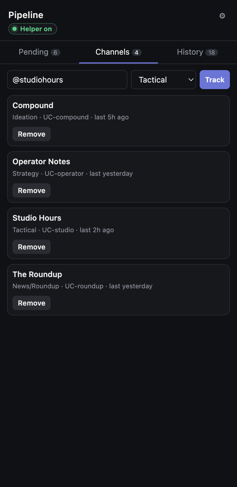
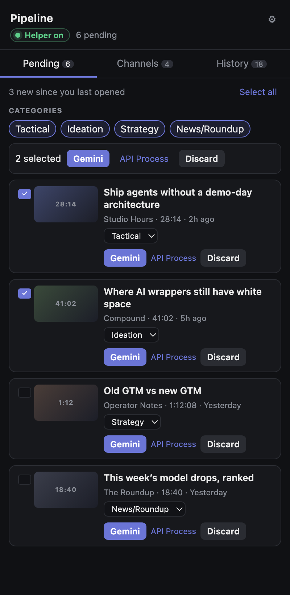
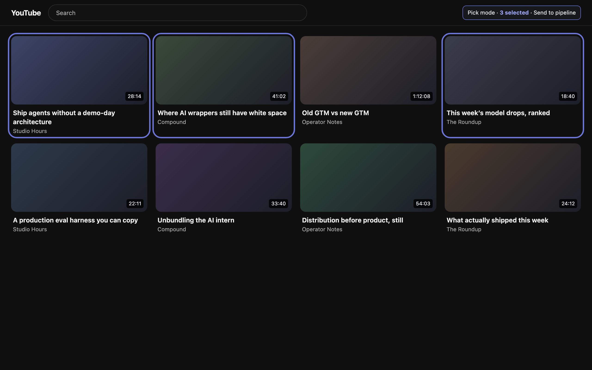
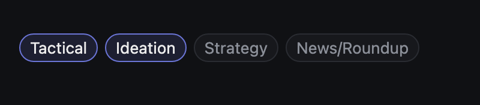
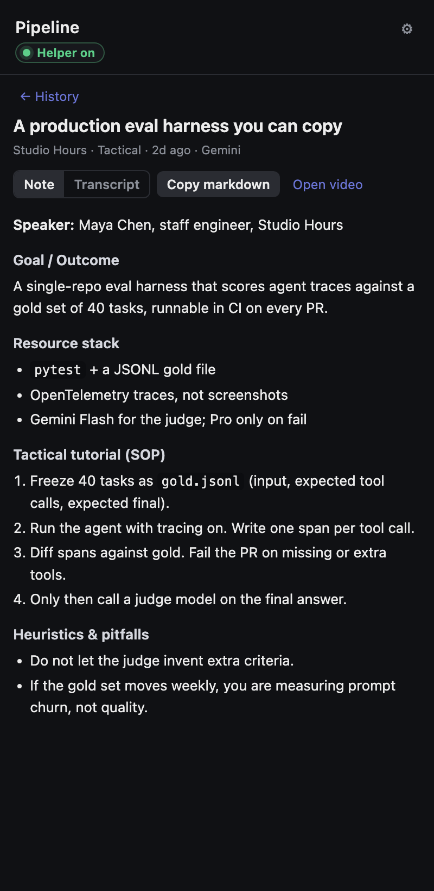
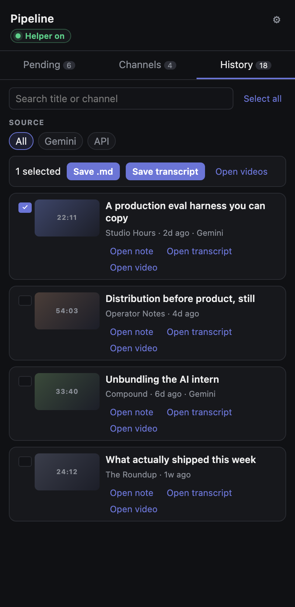

01 · Track
Track the channels that actually matter
A short list, not a subscription dump. Each channel carries a category so the next video already knows what kind of note to become.

ingestor
New videos land in a queue. You process or discard. Gemini extracts a note in the shape of that video — SOP, framework, or briefing — and the file stays on your machine.
Free on GitHub. A helper runs on your computer — not in the Chrome Web Store yet.

Helper · onThe tools it actually talks to.
The job
The people you follow publish faster than you can watch. Pasting a transcript into Gemini gives you one chat you will lose. One-click summarizers are built for the video you are already on — not for the list of channels you already chose.
You already know who to follow. You need the inbox.
How it works
Ingestion runs in your Cloudflare worker. Notes are written on your machine. That split is the product, not a workaround we dressed up.
What you do
A short list, not a subscription dump. Each channel carries a category so the next video already knows what kind of note to become.

Filter by category or channel. Select a handful. Process, or discard. Human-in-the-loop is the point.
On YouTube, select several videos in one pass and send them to Pending. For the archive, not only the upload that just dropped.

Tactical becomes an SOP. Ideation becomes white space and takes. Strategy becomes models and frameworks. News becomes a briefing. Same pipeline, different instrument.


Copy Markdown, save the transcript, open the video. If this project vanished tomorrow, your notes would still open.

Optional. The library lives in History either way.
Branching — isolated Gemini follow-ups from a note — is in development and not part of this launch.
Why the note is not a summary
Goal, tools, click-by-click SOP, mechanics, pitfalls.
White space, niche, contrarian takes, case studies, mental models.
Old way / new way, frameworks, red flags, next steps.
Headlines, sources, the take if there is one.
A tutorial and a strategy talk should not produce the same document.
Why it runs on your machine
A helper on your computer fetches the transcript and talks to Gemini with your key. The queue can live in your Cloudflare worker. Nothing about this product phones home. We collect an email only if you join the waitlist.
Get started
Open the GitHub repo and download or clone it.
Open chrome://extensions, turn on Developer mode, and choose the chrome-extension folder.
Run npm run helper:install, then start the helper from the panel.
Gemini key and your worker URL go in .env — the README walks through it. If that already sounds like a no, the waitlist is the other door.
Waitlist
Same product. Less ceremony. We email when that exists — not a newsletter.
Email only, for this product. See privacy.
FAQ
Gemini has no memory of your channel list and no inbox. This is the layer in front: track, triage, then talk to Gemini with the transcript already in context.
The queue, yes. New publishes still land in Pending. Notes, no. Synthesis waits until the helper is running. That is the inbox rhythm.
It fetches transcripts and talks to Gemini for videos you process. It does not include product analytics. The waitlist form is the only time this site stores an email. Privacy.
Both. Process in the Gemini tab you already use, or via the API from the panel. Same queue.
Not this launch. Get the extension from GitHub, or waitlist for a packaged install.
No. They are the stack the tool talks to.
In development. A footnote, not the product.